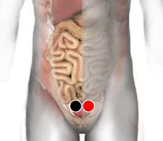

Estreptococo G
Par
vejiga - vejiga
arteria axilar - arteria axilar
sacro - vejiga
gemelo - gemelo

Generalidades:
Estreptococo G. Bacteria.
Síntomas: dolor de pleura, problemas renales, y escarlatina (manchas en la piel tipo rash) en niños da nicturia (expulsión involuntaria de orina durante el sueño), y en adultos incontinencia urinaria la vejiga infectada se contrae se hace dura y obliga a orinar frecuentemente. sangrado uretral, combinado con el estreptococo “A” (braquial) da psoriasis.
Son un género de bacterias con forma de cocos, grampositivas que se reproducen por bipartición en su eje axial. Forman parte de la flora habitual de los humanos, en pocas ocasiones causan patología.
Transmisión
Son bacterias oportunistas; presentes en el organismo humano.